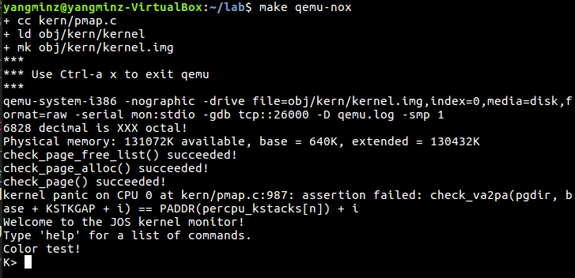
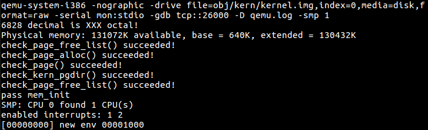
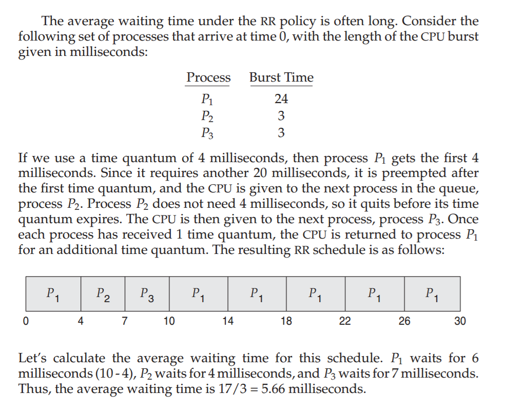
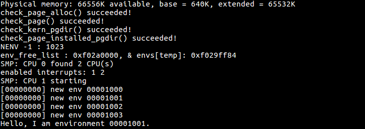
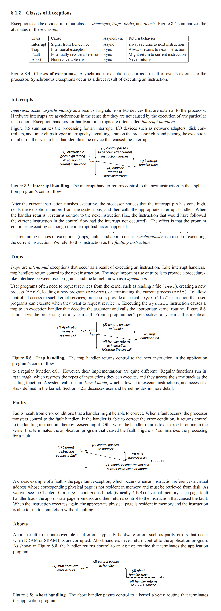
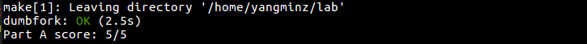
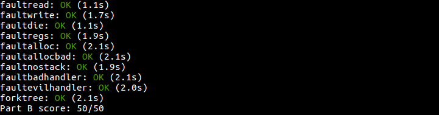

Lab 4: Preemptive Multitasking
代码请见https://coding.net/u/yangminz/p/MITJOS/git。可以通过bash下面的命令完成:
cd ~ git clone https://git.coding.net/yangminz/MITJOS.git lab cd lab git branch git checkout lab4 make qemu make grade
这次实在时间太紧张，而且期末事情特别多，所以challenge都没写。并且这两周所有选修课都差不多开始考试和赶论文了，所以回答就写得简单一点，希望理解一下。
Introduction
In this lab you will implement preemptive multitasking among multiple simultaneously active user-mode environments.
In part A you will add multiprocessor support to JOS, implement round-robin scheduling, and add basic environment management system calls (calls that create and destroy environments, and allocate/map memory).
In part B, you will implement a Unix-like fork(),
which allows a user-mode environment to create copies of
itself.
Finally, in part C you will add support for inter-process communication (IPC), allowing different user-mode environments to communicate and synchronize with each other explicitly. You will also add support for hardware clock interrupts and preemption.
Getting Started
Use Git to commit your Lab 3 source, fetch the latest version of the course repository, and then create a local branch called lab4 based on our lab4 branch, origin/lab4:
athena% cd ~/6.828/lab athena% add git athena% git pull Already up-to-date. athena% git checkout -b lab4 origin/lab4 Branch lab4 set up to track remote branch refs/remotes/origin/lab4. Switched to a new branch "lab4" athena% git merge lab3 Merge made by recursive. ... athena%Lab 4 contains a number of new source files, some of which you should browse before you start:
| kern/cpu.h | Kernel-private definitions for multiprocessor support |
| kern/mpconfig.c | Code to read the multiprocessor configuration |
| kern/lapic.c | Kernel code driving the local APIC unit in each processor |
| kern/mpentry.S | Assembly-language entry code for non-boot CPUs |
| kern/spinlock.h | Kernel-private definitions for spin locks, including the big kernel lock |
| kern/spinlock.c | Kernel code implementing spin locks |
| kern/sched.c | Code skeleton of the scheduler that you are about to implement |
Lab Requirements
This lab is divided into three parts, A, B, and C. We have allocated one week in the schedule for each part.
As before, you will need to do all of the regular exercises described in the lab and at least one challenge problem. (You do not need to do one challenge problem per part, just one for the whole lab.) Additionally, you will need to write up a brief description of the challenge problem that you implemented. If you implement more than one challenge problem, you only need to describe one of them in the write-up, though of course you are welcome to do more. Place the write-up in a file called answers-lab4.txt in the top level of your lab directory before handing in your work.
Part A: Multiprocessor Support and Cooperative Multitasking
In the first part of this lab, you will first extend JOS to run on a multiprocessor system, and then implement some new JOS kernel system calls to allow user-level environments to create additional new environments. You will also implement cooperative round-robin scheduling, allowing the kernel to switch from one environment to another when the current environment voluntarily relinquishes the CPU (or exits). Later in part C you will implement preemptive scheduling, which allows the kernel to re-take control of the CPU from an environment after a certain time has passed even if the environment does not cooperate.
Multiprocessor Support
We are going to make JOS support "symmetric multiprocessing" (SMP), a multiprocessor model in which all CPUs have equivalent access to system resources such as memory and I/O buses. While all CPUs are functionally identical in SMP, during the boot process they can be classified into two types: the bootstrap processor (BSP) is responsible for initializing the system and for booting the operating system; and the application processors (APs) are activated by the BSP only after the operating system is up and running. Which processor is the BSP is determined by the hardware and the BIOS. Up to this point, all your existing JOS code has been running on the BSP.
In an SMP system, each CPU has an accompanying local APIC (LAPIC) unit. The LAPIC units are responsible for delivering interrupts throughout the system. The LAPIC also provides its connected CPU with a unique identifier. In this lab, we make use of the following basic functionality of the LAPIC unit (in kern/lapic.c):
- Reading the LAPIC identifier (APIC ID) to tell which CPU our code is
currently running on (see
cpunum()). - Sending the
STARTUPinterprocessor interrupt (IPI) from the BSP to the APs to bring up other CPUs (seelapic_startap()). - In part C, we program LAPIC's built-in timer to trigger clock
interrupts to support preemptive multitasking (see
apic_init()).
A processor accesses its LAPIC using memory-mapped I/O (MMIO). In MMIO, a portion of physical memory is hardwired to the registers of some I/O devices, so the same load/store instructions typically used to access memory can be used to access device registers. You've already seen one IO hole at physical address 0xA0000 (we use this to write to the VGA display buffer). The LAPIC lives in a hole starting at physical address 0xFE000000 (32MB short of 4GB), so it's too high for us to access using our usual direct map at KERNBASE. The JOS virtual memory map leaves a 4MB gap at MMIOBASE so we have a place to map devices like this. Since later labs introduce more MMIO regions, you'll write a simple function to allocate space from this region and map device memory to it.
Exercise 1.
Implement mmio_map_region in kern/pmap.c. To
see how this is used, look at the beginning of
lapic_init in kern/lapic.c. You'll have to do
the next exercise, too, before the tests for
mmio_map_region will run.
这题和之前的套路题都一样，直接用boot_map_region就行了，注意点在注释中都有提到：
void *
mmio_map_region(physaddr_t pa, size_t size)
{
static uintptr_t base = MMIOBASE;
void * ret = (void *)base;
// round size up to a multiple of PGSIZE
size = ROUNDUP(size, PGSIZE);
// if this reservation would overflow MMIOLIM
if(base + size > MMIOLIM || base + size < base)
panic("mmio_map_region not implemented");
// Hint: The staff solution uses boot_map_region
// simply create the mapping with PTE_PCD|PTE_PWT in addition to PTE_W
boot_map_region(kern_pgdir, base, size, pa,
(PTE_W|PTE_PCD|PTE_PWT));
base += size;
return ret;
}
Application Processor Bootstrap
Before booting up APs, the BSP should first collect information
about the multiprocessor system, such as the total number of
CPUs, their APIC IDs and the MMIO address of the LAPIC unit.
The mp_init() function in kern/mpconfig.c
retrieves this information by reading the MP configuration
table that resides in the BIOS's region of memory.
The boot_aps() function (in kern/init.c) drives
the AP bootstrap process. APs start in real mode, much like how the
bootloader started in boot/boot.S, so boot_aps()
copies the AP entry code (kern/mpentry.S) to a memory
location that is addressable in the real mode. Unlike with the
bootloader, we have some control over where the AP will start
executing code; we copy the entry code to 0x7000
(MPENTRY_PADDR), but any unused, page-aligned
physical address below 640KB would work.
After that, boot_aps() activates APs one after another, by
sending STARTUP IPIs to the LAPIC unit of the corresponding
AP, along with an initial CS:IP address at which the AP
should start running its entry code (MPENTRY_PADDR in our
case). The entry code in kern/mpentry.S is quite similar to
that of boot/boot.S. After some brief setup, it puts the AP
into protected mode with paging enabled, and then calls the C setup
routine mp_main() (also in kern/init.c).
boot_aps() waits for the AP to signal a
CPU_STARTED flag in cpu_status field of
its struct CpuInfo before going on to wake up the next one.
Exercise 2.
Read boot_aps() and mp_main() in
kern/init.c, and the assembly code in
kern/mpentry.S. Make sure you understand the control flow
transfer during the bootstrap of APs. Then modify your implementation
of page_init() in kern/pmap.c to avoid adding
the page at MPENTRY_PADDR to the free list, so that we
can safely copy and run AP bootstrap code at that physical address.
Your code should pass the updated check_page_free_list()
test (but might fail the updated check_kern_pgdir()
test, which we will fix soon).
这题在之前的实验中也有差不多的题，就是根据分的四种情况（实际上算上MPENTRY_PADDR和extended memory有六种情况）建立好物理页即可。一开始不管我怎么写，都会出现triple fault，我实在搞不清楚，最后直接按照下标分配了。需要分配为空闲的区间 有：[1, 6], [8, 159], [750, npages]，中间的7是MPENTRY_PADDR/PGSIZE，750是第四种情况extended memory的空闲部分的开始。
void
page_init(void)
{
size_t i;
for (i = 1; i <= 159; i++) {
if(i != 7){
pages[i].pp_ref = 0;
pages[i].pp_link = page_free_list;
page_free_list = &pages[i];
}
}
for (i = 750; i < npages; i++) {
pages[i].pp_ref = 0;
pages[i].pp_link = page_free_list;
page_free_list = &pages[i];
}
运行的结果如图：

Question
-
Compare kern/mpentry.S side by side with
boot/boot.S. Bearing in mind that kern/mpentry.S
is compiled and linked to run above
KERNBASEjust like everything else in the kernel, what is the purpose of macroMPBOOTPHYS? Why is it necessary in kern/mpentry.S but not in boot/boot.S? In other words, what could go wrong if it were omitted in kern/mpentry.S?
Hint: recall the differences between the link address and the load address that we have discussed in Lab 1.
可以对比两个文件的代码，看到：
lgdt gdtdesc movl %cr0, %eax orl $CR0_PE_ON, %eax movl %eax, %cr0 # Jump to next instruction, but in 32-bit code segment. # Switches processor into 32-bit mode. ljmp $PROT_MODE_CSEG, $protcseg
lgdt MPBOOTPHYS(gdtdesc) movl %cr0, %eax orl $CR0_PE, %eax movl %eax, %cr0 ljmpl $(PROT_MODE_CSEG), $(MPBOOTPHYS(start32))
Per-CPU State and Initialization
When writing a multiprocessor OS, it is important to distinguish
between per-CPU state that is private to each processor, and global
state that the whole system shares. kern/cpu.h defines most
of the per-CPU state, including struct CpuInfo, which stores
per-CPU variables. cpunum() always returns the ID of the
CPU that calls it, which can be used as an index into arrays like
cpus. Alternatively, the macro thiscpu is
shorthand for the current CPU's struct CpuInfo.
Here is the per-CPU state you should be aware of:
-
Per-CPU kernel stack.
Because multiple CPUs can trap into the kernel simultaneously, we need a separate kernel stack for each processor to prevent them from interfering with each other's execution. The arraypercpu_kstacks[NCPU][KSTKSIZE]reserves space for NCPU's worth of kernel stacks.In Lab 2, you mapped the physical memory that
bootstackrefers to as the BSP's kernel stack just belowKSTACKTOP. Similarly, in this lab, you will map each CPU's kernel stack into this region with guard pages acting as a buffer between them. CPU 0's stack will still grow down fromKSTACKTOP; CPU 1's stack will startKSTKGAPbytes below the bottom of CPU 0's stack, and so on. inc/memlayout.h shows the mapping layout. -
Per-CPU TSS and TSS descriptor.
A per-CPU task state segment (TSS) is also needed in order to specify where each CPU's kernel stack lives. The TSS for CPU i is stored incpus[i].cpu_ts, and the corresponding TSS descriptor is defined in the GDT entrygdt[(GD_TSS0 >> 3) + i]. The globaltsvariable defined in kern/trap.c will no longer be useful. -
Per-CPU current environment pointer.
Since each CPU can run different user process simultaneously, we redefined the symbolcurenvto refer tocpus[cpunum()].cpu_env(orthiscpu->cpu_env), which points to the environment currently executing on the current CPU (the CPU on which the code is running). -
Per-CPU system registers.
All registers, including system registers, are private to a CPU. Therefore, instructions that initialize these registers, such aslcr3(),ltr(),lgdt(),lidt(), etc., must be executed once on each CPU. Functionsenv_init_percpu()andtrap_init_percpu()are defined for this purpose.
In addition to this, if you have added any extra per-CPU state or performed any additional CPU-specific initialization (by say, setting new bits in the CPU registers) in your solutions to challenge problems in earlier labs, be sure to replicate them on each CPU here!
Exercise 3.
Modify mem_init_mp() (in kern/pmap.c) to map
per-CPU stacks starting
at KSTACKTOP, as shown in
inc/memlayout.h. The size of each stack is
KSTKSIZE bytes plus KSTKGAP bytes of
unmapped guard pages. Your code should pass the new check in
check_kern_pgdir().
根据注释，这个函数要扩展到对每个CPU都要建立映射。所以对NCPU个CPU，对每个kstacktop_i = KSTACKTOP - i * (KSTKSIZE + KSTKGAP)，每个CPU栈的空间以kstacktop_i被分割为两部分，分别占据KSTKSIZE和KSTKGAP的个数。从inc/memlayout.h中可以看到，高位KSTKGAP的空间是无效的(Invalid Memory)：
/* * KERNBASE, ----> +------------------------------+ 0xf0000000 --+ * KSTACKTOP | CPU0's Kernel Stack | RW/-- KSTKSIZE | * | - - - - - - - - - - - - - - -| | * | Invalid Memory (*) | --/-- KSTKGAP | * +------------------------------+ | * | CPU1's Kernel Stack | RW/-- KSTKSIZE | * | - - - - - - - - - - - - - - -| PTSIZE * | Invalid Memory (*) | --/-- KSTKGAP | * +------------------------------+ | * : . : | * : . : | * MMIOLIM ------> +------------------------------+ 0xefc00000 --+ */所以映射只需要映射前KSTKSIZE就可以了，映射为写：
static void
mem_init_mp(void)
{
// LAB 4: Your code here:
int i = 0;
int kstacktop_i = 0;
for(i = 0; i < NCPU; ++i){
kstacktop_i = KSTACKTOP - i * (KSTKSIZE + KSTKGAP);
boot_map_region(kern_pgdir, kstacktop_i - KSTKSIZE,
ROUNDUP(KSTKSIZE, PGSIZE), PADDR(&percpu_kstacks[i]), PTE_W);
}
}
其中percpu_kstacks[i]按照注释，指向内核栈。这样写通过了check_kern_pgdir()，也通过了mem_init()中所有的check函数：

Exercise 4.
The code in trap_init_percpu() (kern/trap.c)
initializes the TSS and
TSS descriptor for the BSP. It worked in Lab 3, but is incorrect
when running on other CPUs. Change the code so that it can work
on all CPUs. (Note: your new code should not use the global
ts variable any more.)
这题主要就是把ts换成thiscpu->cpu_ts，就完成一大半了。
void
trap_init_percpu(void)
{
// LAB 4: Your code here:
int cid = thiscpu->cpu_id;
// Setup a TSS so that we get the right stack
// when we trap to the kernel.
thiscpu->cpu_ts.ts_esp0 = KSTACKTOP - cid * (KSTKSIZE + KSTKGAP);
thiscpu->cpu_ts.ts_ss0 = GD_KD;
// Initialize the TSS slot of the gdt.
gdt[(GD_TSS0 >> 3)+cid] = SEG16(STS_T32A, (uint32_t) (&(thiscpu->cpu_ts)),
sizeof(struct Taskstate), 0);
gdt[(GD_TSS0 >> 3)+cid].sd_s = 0;
// Load the TSS selector (like other segment selectors, the
// bottom three bits are special; we leave them 0)
ltr(GD_TSS0 + 8*cid);
// Load the IDT
lidt(&idt_pd);
}
When you finish the above exercises, run JOS in QEMU with 4 CPUs using make qemu CPUS=4 (or make qemu-nox CPUS=4), you should see output like this:
... Physical memory: 66556K available, base = 640K, extended = 65532K check_page_alloc() succeeded! check_page() succeeded! check_kern_pgdir() succeeded! check_page_installed_pgdir() succeeded! SMP: CPU 0 found 4 CPU(s) enabled interrupts: 1 2 SMP: CPU 1 starting SMP: CPU 2 starting SMP: CPU 3 starting
Locking
Our current code spins after initializing the AP in
mp_main(). Before letting the AP get any further, we need
to first address race conditions when multiple CPUs run kernel code
simultaneously. The simplest way to achieve this is to use a big
kernel lock.
The big kernel lock is a single global lock that is held whenever an
environment enters kernel mode, and is released when the environment
returns to user mode. In this model, environments in user mode can run
concurrently on any available CPUs, but no more than one environment can
run in kernel mode; any other environments that try to enter kernel mode
are forced to wait.
kern/spinlock.h declares the big kernel lock, namely
kernel_lock. It also provides lock_kernel()
and unlock_kernel(), shortcuts to acquire and
release the lock. You should apply the big kernel lock at four locations:
-
In
i386_init(), acquire the lock before the BSP wakes up the other CPUs. -
In
mp_main(), acquire the lock after initializing the AP, and then callsched_yield()to start running environments on this AP. -
In
trap(), acquire the lock when trapped from user mode. To determine whether a trap happened in user mode or in kernel mode, check the low bits of thetf_cs. -
In
env_run(), release the lock right before switching to user mode. Do not do that too early or too late, otherwise you will experience races or deadlocks.
Exercise 5.
Apply the big kernel lock as described above, by calling
lock_kernel() and unlock_kernel() at
the proper locations.
这题直接按照上面MIT指导中说的，再根据注释在i386_init(),mp_main(),trap(),env_run()中加锁就行，没什么好说的。
How to test if your locking is correct? You can't at this moment! But you will be able to after you implement the scheduler in the next exercise.
Question
- It seems that using the big kernel lock guarantees that only one CPU can run the kernel code at a time. Why do we still need separate kernel stacks for each CPU? Describe a scenario in which using a shared kernel stack will go wrong, even with the protection of the big kernel lock.
因为big kernel lock并不能真正保证每次只有一个CPU运行内核代码。比如说如果发生中断，寄存器被push进CPU Stack是在进行锁检查之前发生的，所以就不同的CPU之间就会被搞混。
Challenge! The big kernel lock is simple and easy to use. Nevertheless, it eliminates all concurrency in kernel mode. Most modern operating systems use different locks to protect different parts of their shared state, an approach called fine-grained locking. Fine-grained locking can increase performance significantly, but is more difficult to implement and error-prone. If you are brave enough, drop the big kernel lock and embrace concurrency in JOS!
It is up to you to decide the locking granularity (the amount of data that a lock protects). As a hint, you may consider using spin locks to ensure exclusive access to these shared components in the JOS kernel:
- The page allocator.
- The console driver.
- The scheduler.
- The inter-process communication (IPC) state that you will implement in the part C.
Round-Robin Scheduling
Your next task in this lab is to change the JOS kernel so that it can alternate between multiple environments in "round-robin" fashion. Round-robin scheduling in JOS works as follows:
- The function
sched_yield()in the new kern/sched.c is responsible for selecting a new environment to run. It searches sequentially through theenvs[]array in circular fashion, starting just after the previously running environment (or at the beginning of the array if there was no previously running environment), picks the first environment it finds with a status ofENV_RUNNABLE(see inc/env.h), and callsenv_run()to jump into that environment. -
sched_yield()must never run the same environment on two CPUs at the same time. It can tell that an environment is currently running on some CPU (possibly the current CPU) because that environment's status will beENV_RUNNING. - We have implemented a new system call for you,
sys_yield(), which user environments can call to invoke the kernel'ssched_yield()function and thereby voluntarily give up the CPU to a different environment.
Exercise 6.
Implement round-robin scheduling in sched_yield()
as described above. Don't forget to modify
syscall() to dispatch sys_yield().
Make sure to invoke sched_yield() in mp_main.
Modify kern/init.c to create three (or more!) environments that all run the program user/yield.c.
Run make qemu. You should see the environments switch back and forth between each other five times before terminating, like below.
Test also with several CPUS: make qemu CPUS=2.
... Hello, I am environment 00001000. Hello, I am environment 00001001. Hello, I am environment 00001002. Back in environment 00001000, iteration 0. Back in environment 00001001, iteration 0. Back in environment 00001002, iteration 0. Back in environment 00001000, iteration 1. Back in environment 00001001, iteration 1. Back in environment 00001002, iteration 1. ...
After the yield programs exit, there will be no runnable environment in the system, the scheduler should invoke the JOS kernel monitor. If any of this does not happen, then fix your code before proceeding.
If you use CPUS=1 at this point, all environments should successfully run. Setting CPUS larger than 1 at this time may result in a general protection fault, kernel page fault, or other unexpected interrupt once there are no more runnable environments due to unhandled timer interrupts (which we will fix below!).
这题需要将kern/init.c的测试文件给改了，可以改成这个样子：
#if defined(TEST)
// Don't touch -- used by grading script!
ENV_CREATE(TEST, ENV_TYPE_USER);
#else
// Touch all you want.
ENV_CREATE(user_idle, ENV_TYPE_USER);
ENV_CREATE(user_yield, ENV_TYPE_USER);
ENV_CREATE(user_yield, ENV_TYPE_USER);
这是为了在多个CPU上运行内核进程。为了能运行多个进程，需要完成RR算法以实现进程调度。算法可以参考一下教材：

void
sched_yield(void)
{
struct Env *idle;
idle = thiscpu->cpu_env;
uint32_t envS; // start env
uint32_t i;
bool env0 = true;
if(idle != NULL)
envS = ENVX( idle->env_id);
else
envS = 0;
for (i = envS; i != envS || env0; i = (i+1) % NENV, env0 = false){
if(envs[i].env_status == ENV_RUNNABLE){
env_run(&envs[i]);
return ;
}
}
if (idle && idle->env_status == ENV_RUNNING){
env_run(idle);
return ;
}
// sched_halt never returns
sched_halt();
}
最后，这个进程调度函数应该在mp_main()中被调用，再修改一下syscall.c就可以运行了（我记得没错的话。。。）

Question
-
In your implementation of
env_run()you should have calledlcr3(). Before and after the call tolcr3(), your code makes references (at least it should) to the variablee, the argument toenv_run. Upon loading the%cr3register, the addressing context used by the MMU is instantly changed. But a virtual address (namelye) has meaning relative to a given address context--the address context specifies the physical address to which the virtual address maps. Why can the pointerebe dereferenced both before and after the addressing switch? - Whenever the kernel switches from one environment to another, it must ensure the old environment's registers are saved so they can be restored properly later. Why? Where does this happen?
Question 3
我感觉应该是因为addressing switch前后都能够维护内核的虚拟地址对env的映射。Question 4
kern/trap.c:curenv->env_tf = *tf保存了当前的trap帧。Challenge! Add a less trivial scheduling policy to the kernel, such as a fixed-priority scheduler that allows each environment to be assigned a priority and ensures that higher-priority environments are always chosen in preference to lower-priority environments. If you're feeling really adventurous, try implementing a Unix-style adjustable-priority scheduler or even a lottery or stride scheduler. (Look up "lottery scheduling" and "stride scheduling" in Google.)
Write a test program or two
that verifies that your scheduling algorithm is working correctly
(i.e., the right environments get run in the right order).
It may be easier to write these test programs
once you have implemented fork() and IPC
in parts B and C of this lab.
Challenge!
The JOS kernel currently does not allow applications
to use the x86 processor's x87 floating-point unit (FPU),
MMX instructions, or Streaming SIMD Extensions (SSE).
Extend the Env structure
to provide a save area for the processor's floating point state,
and extend the context switching code
to save and restore this state properly
when switching from one environment to another.
The FXSAVE and FXRSTOR instructions may be useful,
but note that these are not in the old i386 user's manual
because they were introduced in more recent processors.
Write a user-level test program
that does something cool with floating-point.
System Calls for Environment Creation
Although your kernel is now capable of running and switching between multiple user-level environments, it is still limited to running environments that the kernel initially set up. You will now implement the necessary JOS system calls to allow user environments to create and start other new user environments.
Unix provides the fork() system call
as its process creation primitive.
Unix fork() copies
the entire address space of calling process (the parent)
to create a new process (the child).
The only differences between the two observable from user space
are their process IDs and parent process IDs
(as returned by getpid and getppid).
In the parent,
fork() returns the child's process ID,
while in the child, fork() returns 0.
By default, each process gets its own private address space, and
neither process's modifications to memory are visible to the other.
You will provide a different, more primitive
set of JOS system calls
for creating new user-mode environments.
With these system calls you will be able to implement
a Unix-like fork() entirely in user space,
in addition to other styles of environment creation.
The new system calls you will write for JOS are as follows:
-
sys_exofork: - This system call creates a new environment with an almost blank slate:
nothing is mapped in the user portion of its address space,
and it is not runnable.
The new environment will have the same register state as the
parent environment at the time of the
sys_exoforkcall. In the parent,sys_exoforkwill return theenvid_tof the newly created environment (or a negative error code if the environment allocation failed). In the child, however, it will return 0. (Since the child starts out marked as not runnable,sys_exoforkwill not actually return in the child until the parent has explicitly allowed this by marking the child runnable using....) -
sys_env_set_status: - Sets the status of a specified environment
to
ENV_RUNNABLEorENV_NOT_RUNNABLE. This system call is typically used to mark a new environment ready to run, once its address space and register state has been fully initialized. -
sys_page_alloc: - Allocates a page of physical memory and maps it at a given virtual address in a given environment's address space.
-
sys_page_map: - Copy a page mapping (not the contents of a page!) from one environment's address space to another, leaving a memory sharing arrangement in place so that the new and the old mappings both refer to the same page of physical memory.
-
sys_page_unmap: - Unmap a page mapped at a given virtual address in a given environment.
For all of the system calls above that accept environment IDs,
the JOS kernel supports the convention
that a value of 0 means "the current environment."
This convention is implemented by envid2env()
in kern/env.c.
We have provided a very primitive implementation
of a Unix-like fork()
in the test program user/dumbfork.c.
This test program uses the above system calls
to create and run a child environment
with a copy of its own address space.
The two environments
then switch back and forth using sys_yield
as in the previous exercise.
The parent exits after 10 iterations,
whereas the child exits after 20.
Exercise 7.
Implement the system calls described above
in kern/syscall.c.
You will need to use various functions
in kern/pmap.c and kern/env.c,
particularly envid2env().
For now, whenever you call envid2env(),
pass 1 in the checkperm parameter.
Be sure you check for any invalid system call arguments,
returning -E_INVAL in that case.
Test your JOS kernel with user/dumbfork
and make sure it works before proceeding.
sys_exofork()
这题我先看了一下华中科大的邵志远老师指导的JOS实验记录。根据作者卓达城的说法，sys_exofork()函数是他妈的最难理解的函数之一。在这里，我结合他的实验记录，按照我的理解来写：
CPU的中断和异常大致有fault, trap, interrupt（用户调用）, abort四类。以指令call func为例，在func执行之前，CPU会先将cs和eip寄存器压入栈内，而这里的eip是执行call的下一条指令的，也就是所谓的“保存现场”。题外话，我越来越感觉，这个实验实际上是ICS和OS的融合体。。。
下面一段引用都是来自CSAPP, Chapter 8 - EXCEPTIONAL CONTROL FLOW

以上是一些ICS基础，在此基础上，可以分析user/dumpfork.c中关于sys_exofork()的一句调用了：
// will return 0 instead of the envid of the child. envid = sys_exofork();
sys_exofork()是一个interrupt，根据之前讨论的interrupt的情况可以知道，入栈eip指向envid的赋值指令。而sys_exofork()要做的事情是：
申请一个新的env，并且把父env的寄存器复制进去，然后将trap帧中用来备份的tf->eax设置为0，同时备份的tf->eip指向了envid的赋值。函数返回，相应的成员变量出栈，父env运行赋值使子env能够运行，再调用sched_yield()，还原刚才新建的子env。子env的tf->eip指向这句赋值，eax被备份的eax还原为保留的0，于是赋值语句就有envid = eax = tf->eax = 0。
据说这是一个绝妙的构想。
总之，按照这个思路，以及注释的帮助，就可以完成这个函数了：
static envid_t
sys_exofork(void)
{
struct Env *e;
int err;
if((err = env_alloc(&e, curenv->env_id)) < 0){
return err;
}
e->env_status = ENV_NOT_RUNNABLE;
e->env_tf = curenv->env_tf;
e->env_tf.tf_regs.reg_eax = 0;
return e->env_id;
}
就是将当前的父env的tf备份下来，将作为返回值返回的eax寄存器设为0，这样之后给子env赋值的时候也就赋值为0了。
sys_env_set_status()
这个函数主要就是把env设置为可运行和不可运行
static int
sys_env_set_status(envid_t envid, int status)
{
struct Env *e;
// 两类不可运行
if(envid2env(envid, &e, 1) < 0)
return -E_BAD_ENV;
if(status != ENV_RUNNABLE && status != ENV_NOT_RUNNABLE)
return -E_INVAL;
// 可运行
e->env_status = status;
return 0;
}
sys_page_alloc()
这个函数分配一段内存给envid对应的env，并且映射到虚拟地址va：
static int
sys_page_alloc(envid_t envid, void *va, int perm)
{
struct Env *e;
struct PageInfo *pp;
if(envid2env(envid, &e, 1) < 0)
return -E_BAD_ENV;
if((uintptr_t) va >= UTOP || (uintptr_t) va % PGSIZE)
return -E_INVAL;
if((perm & PTE_U) == 0 || (perm & PTE_P) == 0)
return -E_INVAL;
if((perm & ~(PTE_U | PTE_P | PTE_W | PTE_AVAIL)) != 0)
return -E_NO_MEM;
if ((pp = page_alloc(ALLOC_ZERO)) == NULL)
return -E_NO_MEM;
if(page_insert(e->env_pgdir, pp, va, perm) < 0){
page_free(pp);
return -E_NO_MEM;
}
return 0;
}
sys_page_map()
这个函数将源env中的源虚拟地址srcva对应的页映射到目的env中的目的虚拟地址dstva。对应的判断都在注释中标注了，应该分哪些类等等。
static int
sys_page_map(envid_t srcenvid, void *srcva,
envid_t dstenvid, void *dstva, int perm)
{
struct Env *srcenv;
struct Env *dstenv;
pte_t *pte;
struct PageInfo *pp;
if(envid2env(srcenvid, &srcenv, 1) < 0||
envid2env(dstenvid,&dstenv, 1) < 0)
{
return -E_BAD_ENV;
}
if((uintptr_t)srcva >= UTOP || (uintptr_t)srcva % PGSIZE ||
(uintptr_t)dstva >= UTOP || (uintptr_t)dstva % PGSIZE)
return -E_INVAL;
if((perm & PTE_U) == 0 ||(perm & PTE_P) == 0 ||(perm & ~PTE_SYSCALL) != 0)
return -E_INVAL;
if((pp = page_lookup(srcenv->env_pgdir, srcva, &pte)) == NULL)
return -E_INVAL;
if((perm & PTE_W) && ((*pte & PTE_W)) == 0)
return -E_INVAL;
if (page_insert(dstenv->env_pgdir, pp, dstva, perm))
return -E_NO_MEM;
return 0;
}
sys_page_unmap()
解除上一个函数建立的映射：
static int
sys_page_unmap(envid_t envid, void *va)
{
struct Env *e;
if(envid2env(envid, &e, 1) < 0)
return -E_BAD_ENV;
if((uintptr_t)va >= UTOP || (uintptr_t) va % PGSIZE)
return -E_INVAL;
page_remove(e->env_pgdir, va);
return 0;
}
其实理解了sys_exofork()之后就很好办了。make grade:

Challenge!
Add the additional system calls necessary
to read all of the vital state of an existing environment
as well as set it up.
Then implement a user mode program that forks off a child environment,
runs it for a while (e.g., a few iterations of sys_yield()),
then takes a complete snapshot or checkpoint
of the child environment,
runs the child for a while longer,
and finally restores the child environment to the state it was in
at the checkpoint
and continues it from there.
Thus, you are effectively "replaying"
the execution of the child environment from an intermediate state.
Make the child environment perform some interaction with the user
using sys_cgetc() or readline()
so that the user can view and mutate its internal state,
and verify that with your checkpoint/restart
you can give the child environment a case of selective amnesia,
making it "forget" everything that happened beyond a certain point.
This completes Part A of the lab; check it using make grade and hand it in using make handin as usual. If you are trying to figure out why a particular test case is failing, run ./grade-lab4 -v, which will show you the output of the kernel builds and QEMU runs for each test, until a test fails. When a test fails, the script will stop, and then you can inspect jos.out to see what the kernel actually printed.
Part B: Copy-on-Write Fork
As mentioned earlier,
Unix provides the fork() system call
as its primary process creation primitive.
The fork() system call
copies the address space of the calling process (the parent)
to create a new process (the child).
xv6 Unix implements fork() by copying all data from the
parent's pages into new pages allocated for the child.
This is essentially the same approach
that dumbfork() takes.
The copying of the parent's address space into the child is
the most expensive part of the fork() operation.
However, a call to fork()
is frequently followed almost immediately
by a call to exec() in the child process,
which replaces the child's memory with a new program.
This is what the the shell typically does, for example.
In this case,
the time spent copying the parent's address space is largely wasted,
because the child process will use
very little of its memory before calling exec().
For this reason,
later versions of Unix took advantage
of virtual memory hardware
to allow the parent and child to share
the memory mapped into their respective address spaces
until one of the processes actually modifies it.
This technique is known as copy-on-write.
To do this,
on fork() the kernel would
copy the address space mappings
from the parent to the child
instead of the contents of the mapped pages,
and at the same time mark the now-shared pages read-only.
When one of the two processes tries to write to one of these shared pages,
the process takes a page fault.
At this point, the Unix kernel realizes that the page
was really a "virtual" or "copy-on-write" copy,
and so it makes a new, private, writable copy of the page for the
faulting process.
In this way, the contents of individual pages aren't actually copied
until they are actually written to.
This optimization makes a fork() followed by
an exec() in the child much cheaper:
the child will probably only need to copy one page
(the current page of its stack)
before it calls exec().
In the next piece of this lab, you will implement a "proper"
Unix-like fork() with copy-on-write,
as a user space library routine.
Implementing fork() and copy-on-write support in user space
has the benefit that the kernel remains much simpler
and thus more likely to be correct.
It also lets individual user-mode programs
define their own semantics for fork().
A program that wants a slightly different implementation
(for example, the expensive always-copy version like dumbfork(),
or one in which the parent and child actually share memory afterward)
can easily provide its own.
User-level page fault handling
A user-level copy-on-write fork() needs to know about
page faults on write-protected pages, so that's what you'll
implement first.
Copy-on-write is only one of many possible uses
for user-level page fault handling.
It's common to set up an address space so that page faults indicate when some action needs to take place. For example, most Unix kernels initially map only a single page in a new process's stack region, and allocate and map additional stack pages later "on demand" as the process's stack consumption increases and causes page faults on stack addresses that are not yet mapped. A typical Unix kernel must keep track of what action to take when a page fault occurs in each region of a process's space. For example, a fault in the stack region will typically allocate and map new page of physical memory. A fault in the program's BSS region will typically allocate a new page, fill it with zeroes, and map it. In systems with demand-paged executables, a fault in the text region will read the corresponding page of the binary off of disk and then map it.
This is a lot of information for the kernel to keep track of. Instead of taking the traditional Unix approach, you will decide what to do about each page fault in user space, where bugs are less damaging. This design has the added benefit of allowing programs great flexibility in defining their memory regions; you'll use user-level page fault handling later for mapping and accessing files on a disk-based file system.
Setting the Page Fault Handler
In order to handle its own page faults,
a user environment will need to register
a page fault handler entrypoint with the JOS kernel.
The user environment registers its page fault entrypoint
via the new sys_env_set_pgfault_upcall system call.
We have added a new member to the Env structure,
env_pgfault_upcall,
to record this information.
Exercise 8.
Implement the sys_env_set_pgfault_upcall system call.
Be sure to enable permission checking
when looking up the environment ID of the target environment,
since this is a "dangerous" system call.
这个函数并不难，按照注释的提示，修改对应env的env_pgfault_upcall域就可以了。当envid对应的env产生分页错误时，内核会将fault记录push进exception栈，然后切换到记录在env_pgfault_upcall中的函数指针func。
static int
sys_env_set_pgfault_upcall(envid_t envid, void *func)
{
struct Env *e;
if(envid2env(envid, &e, 1) < 0)
return -E_BAD_ENV;
e->env_pgfault_upcall = func;
user_mem_assert(e, func, 4, 0);
return 0;
}
Normal and Exception Stacks in User Environments
During normal execution,
a user environment in JOS
will run on the normal user stack:
its ESP register starts out pointing at USTACKTOP,
and the stack data it pushes resides on the page
between USTACKTOP-PGSIZE and USTACKTOP-1 inclusive.
When a page fault occurs in user mode,
however,
the kernel will restart the user environment
running a designated user-level page fault handler
on a different stack,
namely the user exception stack.
In essence, we will make the JOS kernel
implement automatic "stack switching"
on behalf of the user environment,
in much the same way that the x86 processor
already implements stack switching on behalf of JOS
when transferring from user mode to kernel mode!
The JOS user exception stack is also one page in size,
and its top is defined to be at virtual address UXSTACKTOP,
so the valid bytes of the user exception stack
are from UXSTACKTOP-PGSIZE through UXSTACKTOP-1 inclusive.
While running on this exception stack,
the user-level page fault handler
can use JOS's regular system calls to map new pages or adjust mappings
so as to fix whatever problem originally caused the page fault.
Then the user-level page fault handler returns,
via an assembly language stub,
to the faulting code on the original stack.
Each user environment that wants to support user-level page fault handling
will need to allocate memory for its own exception stack,
using the sys_page_alloc() system call introduced in part A.
Invoking the User Page Fault Handler
You will now need to change the page fault handling code in kern/trap.c to handle page faults from user mode as follows. We will call the state of the user environment at the time of the fault the trap-time state.
If there is no page fault handler registered,
the JOS kernel destroys the user environment with a message as before.
Otherwise,
the kernel sets up a trap frame on the exception stack that looks like
a struct UTrapframe from inc/trap.h:
<-- UXSTACKTOP trap-time esp trap-time eflags trap-time eip trap-time eax start of struct PushRegs trap-time ecx trap-time edx trap-time ebx trap-time esp trap-time ebp trap-time esi trap-time edi end of struct PushRegs tf_err (error code) fault_va <-- %esp when handler is run
The kernel then arranges for the user environment to resume execution with the page fault handler running on the exception stack with this stack frame; you must figure out how to make this happen. The fault_va is the virtual address that caused the page fault.
If the user environment is already running on the user exception stack
when an exception occurs,
then the page fault handler itself has faulted.
In this case,
you should start the new stack frame just under the current
tf->tf_esp rather than at UXSTACKTOP.
You should first push an empty 32-bit word, then a struct UTrapframe.
To test whether tf->tf_esp is already on the user
exception stack, check whether it is in the range
between UXSTACKTOP-PGSIZE and UXSTACKTOP-1, inclusive.
Exercise 9.
Implement the code in page_fault_handler in
kern/trap.c
required to dispatch page faults to the user-mode handler.
Be sure to take appropriate precautions
when writing into the exception stack.
(What happens if the user environment runs out of space
on the exception stack?)
这个函数的作用是在堆栈中准备好缺页处理函数的参数，堆栈的栈顶是UXSTACKTOP。
void
page_fault_handler(struct Trapframe *tf)
{
uint32_t fault_va;
fault_va = rcr2();
if(tf->tf_cs == GD_KT)
{
panic("Page fault in kernel");
}
if (curenv->env_pgfault_upcall) {
struct UTrapframe *utf;
uintptr_t utf_addr;
// 判断一下是不是迭代的中断：如果是缺页中断迭代，
// esp必然在[UXSTACKTOP-PGSIZE, UXSTACKTOP-1]之间
if (UXSTACKTOP-PGSIZE<=tf->tf_esp && tf->tf_esp<=UXSTACKTOP-1)
// -4是为了预留4个字节将指向utf的esp压入栈内，
// 这样就可以作为参数传递给后来的函数。
utf_addr = tf->tf_esp - sizeof(struct UTrapframe) - 4;
else
utf_addr = UXSTACKTOP - sizeof(struct UTrapframe);
// 填充utf结构
user_mem_assert(curenv, (void*)utf_addr, 1, PTE_W);
utf = (struct UTrapframe *) utf_addr;
utf->utf_fault_va = fault_va;
utf->utf_err = tf->tf_err;
utf->utf_regs = tf->tf_regs;
utf->utf_eip = tf->tf_eip;
utf->utf_eflags = tf->tf_eflags;
utf->utf_esp = tf->tf_esp;
curenv->env_tf.tf_eip = (uintptr_t)curenv->env_pgfault_upcall;
// 将原来的stack切换成新的stack，然后运行env_run
curenv->env_tf.tf_esp = utf_addr;
env_run(curenv);
// 现在CPU切换到用户态了。
// 因为env_run还原的cs寄存器是用户态的cs
}
// Destroy the environment that caused the fault.
cprintf("[%08x] user fault va %08x ip %08x\n",
curenv->env_id, fault_va, tf->tf_eip);
print_trapframe(tf);
env_destroy(curenv);
}
代码的一些关键点，我结合了华中科大的实验记录，作为注释写在上面的代码里了。还有一些更深入的东西，要在下一题Exercise10中说。
User-mode Page Fault Entrypoint
Next, you need to implement the assembly routine that will
take care of calling the C page fault handler and resume
execution at the original faulting instruction.
This assembly routine is the handler that will be registered
with the kernel using sys_env_set_pgfault_upcall().
Exercise 10.
Implement the _pgfault_upcall routine
in lib/pfentry.S.
The interesting part is returning to the original point in
the user code that caused the page fault.
You'll return directly there, without going back through
the kernel.
The hard part is simultaneously switching stacks and
re-loading the EIP.
在上一题中，有写到要-4为esp预留空间，就是因为lib/pfentry.S中有这样的代码：
.text .globl _pgfault_upcall _pgfault_upcall: // Call the C page fault handler. pushl %esp // function argument: pointer to UTF movl _pgfault_handler, %eax call *%eax addl $4, %esp // pop function argument
可以看到最后的pop参数就要求esp+=4.从之前的实验可以知道，当系统出现缺页中断的时候，CPU将当前运行指令的eip压入栈，存放在结构体Trapframe中，然后又把它降到utf里，就是上一题的代码，这样进入缺页处理函数之后，stack的状态应该是：
| ... ... | esp | struct UTrapframe |
|---|
.text .globl _pgfault_upcall _pgfault_upcall: // Call the C page fault handler. pushl %esp // function argument: pointer to UTF movl _pgfault_handler, %eax call *%eax addl $4, %esp // pop function argument movl %esp, %ebx // 将指向eip的40(%esp)放在eax中 // eip就是在tf中备份的eip: tf->eip movl 40(%esp), %eax // esp保存外部用户程序的esp movl 48(%esp), %esp // 将保存eip的eax压入用户栈 pushl %eax movl %ebx, %esp subl $4, 48(%esp) popl %eax popl %eax popal add $4, %esp popfl // 恢复到用户栈 USTACKTOP // 在此之前都是UXSTACKTOP popl %esp ret
Finally, you need to implement the C user library side of the user-level page fault handling mechanism.
Exercise 11.
Finish set_pgfault_handler()
in lib/pgfault.c.
void
set_pgfault_handler(void (*handler)(struct UTrapframe *utf))
{
int r;
if (_pgfault_handler == 0) {
void *va = (void *)(UXSTACKTOP - PGSIZE);
if (sys_page_alloc(thisenv->env_id, va, PTE_P | PTE_U | PTE_W)) {
panic("Unable to allocate memory for pgfault expected\n");
}
sys_env_set_pgfault_upcall(thisenv->env_id, _pgfault_upcall);
}
_pgfault_handler = handler;
}
这个函数并不难。到这里，pagefault的调用过程就清晰了：缺页中断——跳转到汇编_pgfault_upcall——运行handler函数。
Testing
Run user/faultread (make run-faultread). You should see:
... [00000000] new env 00001000 [00001000] user fault va 00000000 ip 0080003a TRAP frame ... [00001000] free env 00001000
Run user/faultdie. You should see:
... [00000000] new env 00001000 i faulted at va deadbeef, err 6 [00001000] exiting gracefully [00001000] free env 00001000
Run user/faultalloc. You should see:
... [00000000] new env 00001000 fault deadbeef this string was faulted in at deadbeef fault cafebffe fault cafec000 this string was faulted in at cafebffe [00001000] exiting gracefully [00001000] free env 00001000
If you see only the first "this string" line, it means you are not handling recursive page faults properly.
Run user/faultallocbad. You should see:
... [00000000] new env 00001000 [00001000] user_mem_check assertion failure for va deadbeef [00001000] free env 00001000
Make sure you understand why user/faultalloc and user/faultallocbad behave differently.
Challenge! Extend your kernel so that not only page faults, but all types of processor exceptions that code running in user space can generate, can be redirected to a user-mode exception handler. Write user-mode test programs to test user-mode handling of various exceptions such as divide-by-zero, general protection fault, and illegal opcode.
Implementing Copy-on-Write Fork
You now have the kernel facilities
to implement copy-on-write fork()
entirely in user space.
We have provided a skeleton for your fork()
in lib/fork.c.
Like dumbfork(),
fork() should create a new environment,
then scan through the parent environment's entire address space
and set up corresponding page mappings in the child.
The key difference is that,
while dumbfork() copied pages,
fork() will initially only copy page mappings.
fork() will
copy each page only when one of the environments tries to write it.
The basic control flow for fork() is as follows:
- The parent installs
pgfault()as the C-level page fault handler, using theset_pgfault_handler()function you implemented above. - The parent calls
sys_exofork()to create a child environment. - For each writable or copy-on-write page in its address space below UTOP,
the parent calls
duppage, which should map the page copy-on-write into the address space of the child and then remap the page copy-on-write in its own address space. [ Note: The ordering here (i.e., marking a page as COW in the child before marking it in the parent) actually matters! Can you see why? Try to think of a specific case where reversing the order could cause trouble. ]duppagesets both PTEs so that the page is not writeable, and to containPTE_COWin the "avail" field to distinguish copy-on-write pages from genuine read-only pages.The exception stack is not remapped this way, however. Instead you need to allocate a fresh page in the child for the exception stack. Since the page fault handler will be doing the actual copying and the page fault handler runs on the exception stack, the exception stack cannot be made copy-on-write: who would copy it?
fork()also needs to handle pages that are present, but not writable or copy-on-write. - The parent sets the user page fault entrypoint for the child to look like its own.
- The child is now ready to run, so the parent marks it runnable.
Each time one of the environments writes a copy-on-write page that it hasn't yet written, it will take a page fault. Here's the control flow for the user page fault handler:
- The kernel propagates the page fault to
_pgfault_upcall, which callsfork()'spgfault()handler. -
pgfault()checks that the fault is a write (check forFEC_WRin the error code) and that the PTE for the page is markedPTE_COW. If not, panic. -
pgfault()allocates a new page mapped at a temporary location and copies the contents of the faulting page into it. Then the fault handler maps the new page at the appropriate address with read/write permissions, in place of the old read-only mapping.
The user-level lib/fork.c code must consult the environment's page
tables for several of the operations above (e.g., that the PTE for a page is
marked PTE_COW). The kernel maps the environment's page tables at
UVPT exactly for this purpose. It uses a clever mapping trick to make it to make it easy to lookup
PTEs for user code. lib/entry.S sets up uvpt and
uvpd so that you can easily lookup page-table information in
lib/fork.c.
Exercise 12.
Implement fork, duppage and
pgfault in lib/fork.c.
Test your code with the forktree program. It should produce the following messages, with interspersed 'new env', 'free env', and 'exiting gracefully' messages. The messages may not appear in this order, and the environment IDs may be different.
1000: I am '' 1001: I am '0' 2000: I am '00' 2001: I am '000' 1002: I am '1' 3000: I am '11' 3001: I am '10' 4000: I am '100' 1003: I am '01' 5000: I am '010' 4001: I am '011' 2002: I am '110' 1004: I am '001' 1005: I am '111' 1006: I am '101'
pgfault()
这个函数判断当前的缺页类型是不是FEC_WR，当前的页是不是PTE_COW。然后将要写的页的内容复制到PFTEMMP，再把地址映射到PFTEMP。其中PFTEMP用作储存物理页的一个临时虚拟地址。
static void
pgfault(struct UTrapframe *utf)
{
void *addr = (void *) utf->utf_fault_va;
uint32_t err = utf->utf_err;
int r;
if (!((err & FEC_WR) && (uvpd[PDX(addr)] & PTE_P) && (uvpt[PGNUM(addr)] & PTE_P) && (uvpt[PGNUM(addr)] & PTE_COW)))
panic("not copy-on-write");
addr = ROUNDDOWN(addr, PGSIZE);
if (sys_page_alloc(0, PFTEMP, PTE_W|PTE_U|PTE_P) < 0)
panic("sys_page_alloc");
memcpy(PFTEMP, addr, PGSIZE);
if (sys_page_map(0, PFTEMP, 0, addr, PTE_W|PTE_U|PTE_P) < 0)
panic("sys_page_map");
if (sys_page_unmap(0, PFTEMP) < 0)
panic("sys_page_unmap");
return;
}
duppage()
这里需要检查PTE_W, PTE_COW。如果当前页不是用户可写且不是COW，那就不改属性直接映射，如果是用户可写的就将属性修改为PTE_COW映射两次。父子进程之间是完全隔离的，所以两个进程都要做这个事情。
static int
duppage(envid_t envid, unsigned pn)
{
int r;
void *addr = (void*) (pn*PGSIZE);
if ((uvpt[pn] & PTE_W) || (uvpt[pn] & PTE_COW)) {
r = sys_page_map(0, addr, envid, addr, PTE_COW|PTE_U|PTE_P);
if(r < 0)
return r;
// 在子进程写addr之前，如果父进程改变p的内容
// 就会发生copy on write，这样就不会改变原来那一页的内容
// 于是子进程的内容也就不会改变。
r = sys_page_map(0, addr, 0, addr, PTE_COW|PTE_U|PTE_P);
if(r < 0)
return r;
}
else sys_page_map(0, addr, envid, addr, PTE_U|PTE_P);
return 0;
panic("duppage not implemented");
}
fork()
envid_t
fork(void)
{
// LAB 4: Your code here.
set_pgfault_handler(pgfault);
envid_t envid;
uint32_t addr;
envid = sys_exofork();
if (envid == 0) {
// panic("child");
thisenv = &envs[ENVX(sys_getenvid())];
return 0;
}
// cprintf("sys_exofork: %x\n", envid);
if (envid < 0)
panic("sys_exofork: %e", envid);
for (addr = 0; addr < USTACKTOP; addr += PGSIZE)
if ((uvpd[PDX(addr)] & PTE_P) && (uvpt[PGNUM(addr)] & PTE_P)
&& (uvpt[PGNUM(addr)] & PTE_U)) {
duppage(envid, PGNUM(addr));
}
if (sys_page_alloc(envid, (void *)(UXSTACKTOP-PGSIZE), PTE_U|PTE_W|PTE_P) < 0)
panic("1");
extern void _pgfault_upcall();
sys_env_set_pgfault_upcall(envid, _pgfault_upcall);
if (sys_env_set_status(envid, ENV_RUNNABLE) < 0)
panic("sys_env_set_status");
return envid;
// panic("fork not implemented");
}
这里的for循环对uvpd，也就是pgdir进行了遍历，如果存在，就遍历页。最后结果：

Challenge!
Implement a shared-memory fork()
called sfork(). This version should have the parent
and child share all their memory pages
(so writes in one environment appear in the other)
except for pages in the stack area,
which should be treated in the usual copy-on-write manner.
Modify user/forktree.c
to use sfork() instead of regular fork().
Also, once you have finished implementing IPC in part C,
use your sfork() to run user/pingpongs.
You will have to find a new way to provide the functionality
of the global thisenv pointer.
Challenge!
Your implementation of fork
makes a huge number of system calls. On the x86, switching into
the kernel using interrupts has non-trivial cost. Augment the
system call interface
so that it is possible to send a batch of system calls at once.
Then change fork to use this interface.
How much faster is your new fork?
You can answer this (roughly) by using analytical
arguments to estimate how much of an improvement batching
system calls will make to the performance of your
fork: How expensive is an int 0x30
instruction? How many times do you execute int 0x30
in your fork? Is accessing the TSS stack
switch also expensive? And so on...
Alternatively, you can boot your kernel on real hardware
and really benchmark your code. See the RDTSC
(read time-stamp counter) instruction, defined in the IA32
manual, which counts the number of clock cycles that have
elapsed since the last processor reset. QEMU doesn't emulate
this instruction faithfully (it can either count the number of
virtual instructions executed or use the host TSC, neither of
which reflects the number of cycles a real CPU would
require).
This ends part B. As usual, you can grade your submission with make grade and hand it in with make handin.
Part C: Preemptive Multitasking and Inter-Process communication (IPC)
In the final part of lab 4 you will modify the kernel to preempt uncooperative environments and to allow environments to pass messages to each other explicitly.
Clock Interrupts and Preemption
Run the user/spin test program. This test program forks off a child environment, which simply spins forever in a tight loop once it receives control of the CPU. Neither the parent environment nor the kernel ever regains the CPU. This is obviously not an ideal situation in terms of protecting the system from bugs or malicious code in user-mode environments, because any user-mode environment can bring the whole system to a halt simply by getting into an infinite loop and never giving back the CPU. In order to allow the kernel to preempt a running environment, forcefully retaking control of the CPU from it, we must extend the JOS kernel to support external hardware interrupts from the clock hardware.
Interrupt discipline
External interrupts (i.e., device interrupts) are referred to as IRQs.
There are 16 possible IRQs, numbered 0 through 15.
The mapping from IRQ number to IDT entry is not fixed.
pic_init in picirq.c maps IRQs 0-15
to IDT entries IRQ_OFFSET through IRQ_OFFSET+15.
In inc/trap.h,
IRQ_OFFSET is defined to be decimal 32.
Thus the IDT entries 32-47 correspond to the IRQs 0-15.
For example, the clock interrupt is IRQ 0.
Thus, IDT[IRQ_OFFSET+0] (i.e., IDT[32]) contains the address of
the clock's interrupt handler routine in the kernel.
This IRQ_OFFSET is chosen so that the device interrupts
do not overlap with the processor exceptions,
which could obviously cause confusion.
(In fact, in the early days of PCs running MS-DOS,
the IRQ_OFFSET effectively was zero,
which indeed caused massive confusion between handling hardware interrupts
and handling processor exceptions!)
In JOS, we make a key simplification compared to xv6 Unix.
External device interrupts are always disabled
when in the kernel (and, like xv6, enabled when in user space).
External interrupts are controlled by the FL_IF flag bit
of the %eflags register
(see inc/mmu.h).
When this bit is set, external interrupts are enabled.
While the bit can be modified in several ways,
because of our simplification, we will handle it solely
through the process of saving and restoring %eflags register
as we enter and leave user mode.
You will have to ensure that the FL_IF flag is set in
user environments when they run so that when an interrupt arrives, it
gets passed through to the processor and handled by your interrupt code.
Otherwise, interrupts are masked,
or ignored until interrupts are re-enabled.
We masked interrupts with the very first instruction of the bootloader,
and so far we have never gotten around to re-enabling them.
Exercise 13.
Modify kern/trapentry.S and kern/trap.c to
initialize the appropriate entries in the IDT and provide
handlers for IRQs 0 through 15. Then modify the code
in env_alloc() in kern/env.c to ensure
that user environments are always run with interrupts enabled.
The processor never pushes an error code when invoking a hardware interrupt handler. You might want to re-read section 9.2 of the 80386 Reference Manual, or section 5.8 of the IA-32 Intel Architecture Software Developer's Manual, Volume 3, at this time.
After doing this exercise, if you run your kernel with any test program that runs for a non-trivial length of time (e.g., spin), you should see the kernel print trap frames for hardware interrupts. While interrupts are now enabled in the processor, JOS isn't yet handling them, so you should see it misattribute each interrupt to the currently running user environment and destroy it. Eventually it should run out of environments to destroy and drop into the monitor.
Handling Clock Interrupts
In the user/spin program, after the child environment was first run, it just spun in a loop, and the kernel never got control back. We need to program the hardware to generate clock interrupts periodically, which will force control back to the kernel where we can switch control to a different user environment.
The calls to lapic_init and pic_init
(from i386_init in init.c),
which we have written for you,
set up the clock and the interrupt controller to generate interrupts.
You now need to write the code to handle these interrupts.
Exercise 14.
Modify the kernel's trap_dispatch() function
so that it calls sched_yield()
to find and run a different environment
whenever a clock interrupt takes place.
You should now be able to get the user/spin test to work:
the parent environment should fork off the child,
sys_yield() to it a couple times
but in each case regain control of the CPU after one time slice,
and finally kill the child environment and terminate gracefully.
This is a great time to do some regression testing. Make sure that you haven't broken any earlier part of that lab that used to work (e.g. forktree) by enabling interrupts. Also, try running with multiple CPUs using make CPUS=2 target. You should also be able to pass stresssched now. Run make grade to see for sure. You should now get a total score of 65/80 points on this lab.
Inter-Process communication (IPC)
(Technically in JOS this is "inter-environment communication" or "IEC", but everyone else calls it IPC, so we'll use the standard term.)
We've been focusing on the isolation aspects of the operating system, the ways it provides the illusion that each program has a machine all to itself. Another important service of an operating system is to allow programs to communicate with each other when they want to. It can be quite powerful to let programs interact with other programs. The Unix pipe model is the canonical example.
There are many models for interprocess communication. Even today there are still debates about which models are best. We won't get into that debate. Instead, we'll implement a simple IPC mechanism and then try it out.
IPC in JOS
You will implement a few additional JOS kernel system calls
that collectively provide a simple interprocess communication mechanism.
You will implement two
system calls, sys_ipc_recv and
sys_ipc_try_send.
Then you will implement two library wrappers
ipc_recv and ipc_send.
The "messages" that user environments can send to each other using JOS's IPC mechanism consist of two components: a single 32-bit value, and optionally a single page mapping. Allowing environments to pass page mappings in messages provides an efficient way to transfer more data than will fit into a single 32-bit integer, and also allows environments to set up shared memory arrangements easily.
Sending and Receiving Messages
To receive a message, an environment calls
sys_ipc_recv.
This system call de-schedules the current
environment and does not run it again until a message has
been received.
When an environment is waiting to receive a message,
any other environment can send it a message -
not just a particular environment,
and not just environments that have a parent/child arrangement
with the receiving environment.
In other words, the permission checking that you implemented in Part A
will not apply to IPC,
because the IPC system calls are carefully designed so as to be "safe":
an environment cannot cause another environment to malfunction
simply by sending it messages
(unless the target environment is also buggy).
To try to send a value, an environment calls
sys_ipc_try_send with both the receiver's
environment id and the value to be sent. If the named
environment is actually receiving (it has called
sys_ipc_recv and not gotten a value yet),
then the send delivers the message and returns 0. Otherwise
the send returns -E_IPC_NOT_RECV to indicate
that the target environment is not currently expecting
to receive a value.
A library function ipc_recv in user space will take care
of calling sys_ipc_recv and then looking up
the information about the received values in the current
environment's struct Env.
Similarly, a library function ipc_send will
take care of repeatedly calling sys_ipc_try_send
until the send succeeds.
Transferring Pages
When an environment calls sys_ipc_recv
with a valid dstva parameter (below UTOP),
the environment is stating that it is willing to receive a page mapping.
If the sender sends a page,
then that page should be mapped at dstva
in the receiver's address space.
If the receiver already had a page mapped at dstva,
then that previous page is unmapped.
When an environment calls sys_ipc_try_send
with a valid srcva (below UTOP),
it means the sender wants to send the page
currently mapped at srcva to the receiver,
with permissions perm.
After a successful IPC,
the sender keeps its original mapping
for the page at srcva in its address space,
but the receiver also obtains a mapping for this same physical page
at the dstva originally specified by the receiver,
in the receiver's address space.
As a result this page becomes shared between the sender and receiver.
If either the sender or the receiver does not indicate
that a page should be transferred,
then no page is transferred.
After any IPC
the kernel sets the new field env_ipc_perm
in the receiver's Env structure
to the permissions of the page received,
or zero if no page was received.
Implementing IPC
Exercise 15.
Implement sys_ipc_recv and
sys_ipc_try_send in kern/syscall.c.
Read the comments on both before implementing them, since they
have to work together.
When you call envid2env in these routines, you should
set the checkperm flag to 0,
meaning that any environment is allowed to send
IPC messages to any other environment,
and the kernel does no special permission checking
other than verifying that the target envid is valid.
Then implement
the ipc_recv and ipc_send functions
in lib/ipc.c.
Use the user/pingpong and user/primes functions to test your IPC mechanism. user/primes will generate for each prime number a new environment until JOS runs out of environments. You might find it interesting to read user/primes.c to see all the forking and IPC going on behind the scenes.
Challenge!
Why does ipc_send
have to loop? Change the system call interface so it
doesn't have to. Make sure you can handle multiple
environments trying to send to one environment at the
same time.
Challenge! The prime sieve is only one neat use of message passing between a large number of concurrent programs. Read C. A. R. Hoare, ``Communicating Sequential Processes,'' Communications of the ACM 21(8) (August 1978), 666-667, and implement the matrix multiplication example.
Challenge! One of the most impressive examples of the power of message passing is Doug McIlroy's power series calculator, described in M. Douglas McIlroy, ``Squinting at Power Series,'' Software--Practice and Experience, 20(7) (July 1990), 661-683. Implement his power series calculator and compute the power series for sin(x+x^3).
Challenge! Make JOS's IPC mechanism more efficient by applying some of the techniques from Liedtke's paper, Improving IPC by Kernel Design, or any other tricks you may think of. Feel free to modify the kernel's system call API for this purpose, as long as your code is backwards compatible with what our grading scripts expect.
This ends part C. Make sure you pass all of the make grade tests and don't forget to write up your answers to the questions and a description of your challenge exercise solution in answers-lab4.txt.
Before handing in, use git status and git diff to examine your changes and don't forget to git add answers-lab4.txt. When you're ready, commit your changes with git commit -am 'my solutions to lab 4', then make handin and follow the directions.